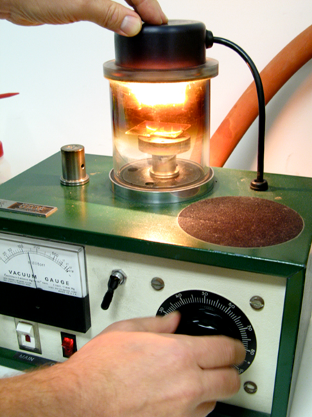

Microscope resolution increases as the wavelength of radiation used to illuminate the specimen decreases.
True
False
Microscope resolution increases as the wavelength of radiation used to illuminate the specimen decreases.
True
What is the meaning of SEM?
Secundary Electrons Magnified
Secundary Electron Magnification
Scanning Electron Microscopy
SannEr Microscopy
Scanning Electron Microscopy
What can we study in a SEM?
What can we study in a SEM?
Topography and Morphology
Chemistry
Crystallography
Orientation of grains
In-situ experiments
Reactions with atmosphere
Effects of temperature
The SEM is a close relative of the electron microprobe (EMP) but is designed primarily for imaging rather than analysis.
Images are produced by scanning the beam while displaying the signal from an electron detector on a TV screen or computer
monitor. By choosing the appropriate detection mode, either topographic or compositional contrast (= mean atomic number)
can be obtained. Since EMP instruments have electron imaging facilities, used primarily for locating points for analysis,
the functions of the EMP and the SEM overlap considerably. The SEM is optimized for imaging, with analysis as an extra,
whereas in the EMP the priorities are reversed and various additional features that facilitate analysis are incorporated.
The advantages of the SEM as an imaging instrument, make it an invaluable tool in many branches of geology, including
paleontology (SEM is ideally suited to the study of fossil morphology, especially that of micro-fossils), sedimentology
(data on fabric and porosity can be generated as well as images of individual grains and intergrowths), mineralogy (to
study crystal morphology on a micro-scale), etc.
LM versus SEM
What is the same and what is different when using LM versus SEM?
LMSEM
LM versus SEM
Fundamentally and functionally, electron microscopes are in many ways analogous to their optical counterparts (light microscopes:
LM).
SEM
LM versus SEM
Contrast between simple technology of LM and complex electronics, vacuum equipment, voltage supplies and electron optics
system of electron microscopes.
LMSEM
How does SEM work?
A beam of electrons is generated in the electron gun, located at the top of the column, where a filament is located (Fig.
40). The most common used filament is Tungsten hairpin gun. This filament is a loop of tungsten which functions as the
cathode. A voltage is applied to the loop, causing it to heat up. The anode, which is positive with respect to the filament,
forms powerful attractive forces for electrons. This causes electrons to accelerate toward the anode. This beam is attracted
through the anode, condensed by one or two condenser lens, and focused as a very fine point on the sample by the objective
lens. The beam passes through pairs of scanning coils or pairs of deflector plates in the electron optical column. The
scan coils are energized (by varying the voltage produced by the scan generator) and create a magnetic field which deflect
the beam horizontally and vertically so that it scans in a raster fashion over a rectangular area of the sample surface.
When the primary electron beam interacts with the sample, the electrons lose energy by repeated scattering and absorption
within a teardrop-shaped volume of the specimen known as the interaction volume, which extends from less than 100 nm to
around 5 µm into the surface (Fig. 41a). The size of the interaction volume depends on the electrons' landing energy,
the atomic number of the specimen and the specimen's density. The energy exchange between the electron beam and the sample
results in the emission of electrons and electromagnetic radiation, which can be detected to produce an image.
What is a SEM?
A Scanning Electron Microscope (SEM) is a tool for seeing otherwise invisible worlds of microspace (1 micron ) and nanospace
(1 nanometer).
A SEM is a tool for seeing otherwise invisible worlds of microspace (1 micron = 10-6 m) and nanospace (1 nanometer = 10-9
m). By using a focused beam of electrons, the SEM reveals levels of detail and complexity inaccessible by light microscopy.
What is a SEM?
By using a focused beam of electrons, SEM reveals levels of detail and complexity inaccessible by light microscopy.
SEMs can magnify an object from about 10 times up to 300,000 times.
A scale bar is often provided on an SEM image. From this the actual size of structures in the image can be calculated.
SEMs can magnify an object from about 10 times up to 300,000 times. A scale bar is often provided on an SEM image. From
this, the actual size of structures in the image can be calculated.
SEM versus LM
electrons:
negatively charged particles within the atom.
cannot be focused by glass lenses (unlike visible light) but electromagnets are capable of guiding and concentrating electrons
(just as glass bends light).
A SEM is a type of electron microscope that images a sample by scanning it with a high-energy beam of electrons in a raster
scan pattern. The electrons interact with the atoms of the sample, producing signals that contain information about the
sample's surface topography, composition, and other properties such as electrical conductivity.
SEM versus LM
SEM provides the user with an advantage over LM in 3 key areas:
Resolution at high magnification: Best resolution LM = about 400 nm a typical SEM has a resolution
of better than 10 nm (typically 5 nm).
Depth of field: (= height of a specimen that appears in focus in an image ) more than 300 times depth
of field compared to the LM => great topographical detail can be obtained.
Microanalysis: (= analysis of sample composition including information about chemical composition, as
well as crystallographic, magnetic and electrical characteristics)
A modern SEM can be equipped with various accessories, e.g. hot stage
Peltier heating stage -25°C to +160°C
SEM Coolstage (DEBEN)
Coolstage -25°C to +50°C for high & low vacuum SEMs
SEM and X-ray CT on SEM
The standard SEM image in SE mode displays the 3D surface of the object as a 2D flat picture. Object: plastic foam. (Courtesy:
Bruker)
Micro-CT attachment for SEM allows visualization and measurement of the true 3D internal microstructure of the object
without any physical cut or additional preparation. (Courtesy: Bruker)
Other SEM types/technologies
There are a number of different types of SEMs which all have specific purposes, often associated with additional pieces
of equipment like specialised stages or collectors. Some of these do not require dry or conductive samples. They include
the following:
Low vacuum scanning electron microscopy (LVSEM) or Environmental scanning electron microscope (ESEM)
Using freezing equipment on a SEM (Cryo-SEM)
Focused ion beam (FIB) technology
Drawback to SEM
One drawback to the use of SEM is that it (mostly) operates under vacuum and in many SEMs the samples must be rendered
conductive to be viewed. This is often achieved by coating with a very thin layer of metal or carbon.
Why is coating necessary?
prevents charging of the specimen
reduces thermal damage
improves SEI
Insufficient coating causes build-up of electrons in the observed area => charging artefacts
The specimens are mounted on a “stub”, which takes the form of a disc, usually made of aluminum and typically about 1 cm
in diameter. The sample is glued to the stub by using double-sided sticky tape and coated to provide conduction
Carbon coating
Commonly, a high vacuum evaporator with carbon rods is used to achieve these coatings, and still has preferential applications.
The use of carbon fiber however, has allowed a flash evaporation technique to be developed which can be suitable for a
number of general EM requirements.

Drawback of the SEM
Beam-related contamination: refers to the deposition of material (e.g. carbon) in a region on the sample
where the beam has been scanning.
One way to work around this artefact is to take micrographs at low magnification, before moving to higher magnification.
Before going into the technical details, some history…
SEM…Some history
In 1923, Busch demonstrated that a beam of electrons could be focused by magnetic or electric fields.
This opened the way for the development and construction of the first TEM in 1932, by Knoll and Ruska, and the first SEM
in 1938 by von Ardenne.
(Fig. 39) first SEM
SOME HISTORY
In 1923, Busch demonstrated that a beam of electrons could be focused by magnetic or electric fields. This opened the way
for the development and construction of the first transmission electron microscope (TEM) in 1932, by Knoll and Ruska,
and the first scanning electron microscope (SEM) (fig. 39) in 1938 by M. von Ardenne.
TEM vs SEM
TEM vs SEM
Images of metal particles on a fiber support. Light microscope (top left), SEM (top right), TEM (bottom left, McCrone
Associates). High-angle annular dark-field image of metal particle acquired on the TEM operated in scanning transmission
mode. Arrow indicates single atoms of metal (bottom right, University of Illinois at Chicago).
SEM…Some history
In 1942 Zworykin et al. produced a SEM with a potential resolution of 50 nm. These early SEMs had little better than LM
performance.
Great improvements in the design, particularly in the area of detection and the use of SE were made by Oatley and his group
at Cambridge University.
Zworykin et al. (1942) produced a SEM with a potential resolution of 50 nm. These early SEMs had little better than LM
performance. Great improvements in the design, particularly in the area of detection and the use of secondary electrons
(SE) were made by O.W. Oatley and his group at Cambridge University.
SEM…Some history
In 1953 McMullan constructed a prototype SEM in the Cambridge Laboratories and by 1955 development had achieved a resolution
of 25 nm.
In 1960 the improvement of the secondary electron detector was accomplished by Everhart and Thornley. This resulted in
the Everhart-Thornley Detector used in SEM and named after its designers.
The first commercial SEM was produced by the Cambridge Instrument Company and became available in 1965 with a resolution
of about 20-25 nm.
McMullan (1953) constructed a prototype SEM in the Cambridge Laboratories and by 1955 development had achieved a resolution
of 25 nm. The improvement of the secondary electron detector was accomplished by Everhart and Thornley in 1960. This resulted
in the Everhart-Thornley Detector used in SEM and named after its designers. The first commercial SEM was produced by
the Cambridge Instrument Company and became available in 1965 with a resolution of about 20-25 nm.
SEM…Some history
Since 1965: SEM has evolved to become one of the most versatile tools of the physical and biological sciences.
Today, many SEMs are commercially available; they all contain the same essential features: an electron optical column in
which an electron beam is generated under high vacuum, and focused to a tiny spot on the specimen surface + (vacuum chamber)
+ detectors
First SEM (1965)Current SEM
Since then, the SEM has evolved to become one of the most versatile tools of the physical and biological sciences. Today,
many SEMs are commercially available and they all contain the same essential features: an electron optical column in which
an electron beam is generated under high vacuum, and focused to a tiny spot on the specimen surface. The specimen response
is detected and then displayed in visual mode.
Which machine is a SEM?
Upper
Middle
Lower
Current SEM
SEM can be used…?
To determine the location of liquids inside the pores
To obtain a 3D image of the mineral structure
To obtain the location of the elements
Hydric status of “preserved” core clay samples
BIB(-FIB)-cryo-SEM (Desbois et al. (2014), Engineering Geology)
FIB-SEM tomography on selected ROI from large BIB image
Which is the highest resolution that can be obtained by means of SEM?
10 µm
1 µm
100 nm
10 nm
I don't know
A microscope in which an image is formed by passing an electron beam through a specimen and focusing the scattered electrons
with magnetic lenses is called a ?
transmission electron microscope
scanning electron microscope
phase-contrast microscope
Phase contrast microscopy
an optical microscopy technique that converts phase shifts in light passing through a transparent specimen to brightness
changes in the image.
Phase shifts themselves are invisible, but become visible when shown as brightness variations.